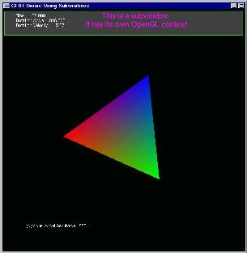
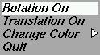
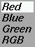

![[LinuxFocus Image]](../../common/May1998/border-short.jpg)
| Noticias Archivos Compañías Consejos |
GLUT: Utilizando Menúspor Miguel Angel Sepúveda |
|
Este artículo es el tercero de la serie dedicada a la GL Utility Toolkit (GLUT) escrito por Mark Kilgard. GLUT es una herramienta muy útil para desarrolladores con OpenGL porque abstrae en un API simple de aprender y utilizar la parte dependiente de la arquitectura de la aplicación OpenGL. Como se ha mencionado en artículos anteriores, las razones por razones de desarrollo OpenGL sólo incluye directivas para la parte independiente de la arquitectura de un API 3D avanzado. Abrir ventanas, manejo de la entrada de teclado, etc.. son muy dependientes de la plataforma y está fuera del alcance de OpenGL. GLUT es la respuesta a este problema: GLUT ofrece un interfaz común para múltiples plataformas para el manejo de cosas como ventanas, buffers, renderización de texto, entrada por el teclado y menús.
Hoy exploraremos el uso de menus dentro de nuestras aplicaciones OpenGL. Un menú es una forma más de comunicación con el usuario por parte de la aplicación. En nuestro artículo previo (Manejo de Ventanas) demostramos otra técnica para la entrada del usuario, teclas rápidas. GLUT captura los eventos de entrada de teclado tan bien como los eventos de ratón y nos deja introducir funciones (callbacks) para manejar estos incidentes. La desventaja de las "teclas rápidas" es que son invisibles, requieren que el usuario lea un manual o recuerde que tecla hace tal cosa. Los menús, por otra parte son mucho más flexibles porque son gráficos y muestran las opciones de usuario disponibles actualmente. Como ejemplo he aquí el código fuente de un programa ejemplo (../../common/May1998/example1.tar.gz). Este programa es una modificación del programa mostrado en el artículo anterior Manejo de Ventanas. Obtenga el programa y compilelo utilizando el Makefile suministrado. La compilación requiere la librería OpenGL (Mesa, por ejemplo) y la biblioteca GLUT. Ambas librerías son fácilmente obtenibles y están incluidas de una forma u otra en muchas distribuciones de Linux. Tras la compilación obtenemos el fichero ejecutable, example1 . Ejecútelo y podrá ver una nueva ventana con un triángulo en color de vértices rojo, verde y azul (ver figura de la izquierda). El área contiene una ventana principal con fondo negro y un triángulo en el centro y una sub-ventana con fondo gris con texto escrito en ella. Nuestro ejemplo es realmente una animación en tiempo real por lo que el campo de tiempo en la sub-ventana debe ser incrementado. Mueva el ratón al área de la ventana principal, mantenga pulsado el botón izquierdo del ratón. Este evento es manejado por nuestro ejemplo y debe abrir el siguiente menú: El menú contiene tres opciones (rotar, trasladar, cambiar color) y una final para terminar la aplicación. Mientras mantenga pulsado el botón izquierdo del ratón, muévase a cada opción y pruebe lo que ocurre. Seleccionando "Rotation On" el triángulo rotará alrededor de su centro de gravedad, la opción "Translation On" moverá el triángulo horizontalmente a través de la ventana y lo ocultará cuando el final de la ventana sea alcanzado. La opción "Change Color" lanzará un sub-menú nuevo con estas nuevas opciones: 
Este es un ejemplo muy simple del uso de menús en una aplicación OpenGL. La apariencia de menús y sub-menús es dependiente de la plataforma. El aspecto mostrado aquí es el del GLUT para Linux, compilado y ejecutado bajo Windows 95/NT tendrá una apariencia diferente. Lo que importa es que esta funcionalidad es portable si utiliza la librería GLUT. Note que el menú principal tiene dos tipos diferentes de entradas. El primer tipo (Rotation On, Translation On) cambia cuando la acción es ejecutada. Esto significa que tras lanzar el triángulo en modo de rotación, la próxima vez que vea el menú principal aparecerá "Rotation Off". La otra clase de entrada en el menú permanece siempre constante, como "Change Color", "Red", "Blue" y "Green". Existen unas algunas cosas interesantes que me gustaría advertir antes de continuar describiendo como programar estos menús. ¿Recuerda que esta demo tiene dos teclas rápidas? (Manejo de Ventanas). Estas teclas son "q" para salir y "i" para activar o desactivar la información. Intente utilizarlas de nuevo, todavía funcionan. Mientras que el mensaje con información está activado (sub-ventana), mueva el cursor a cualquier lugar dentro de la región gris y pulse el botón izquierdo del ratón. ¡Sorpresa! Verá este otro menú: Esto demuestra que los menús no sólo son relacionados con eventos (botón izquierdo del menú) sino que son utilizados de acuerdo con el actual contexto OpenGL. También hemos mencionado en nuestro pasado artículo que una sub-ventana GLUT incorpora su propio contexto OpenGL, aquí podemos ver otra consecuencia de este hecho. Dos menús han sido relacionados con el mismo evento pero en diferentes contextos. El desarrollador tiene una herramienta potente para escribir un interfaz de usuario sofisticado para su aplicaciones. Todavía más interesante es el hecho que si desactiva el mensaje informativo utilizando la tecla "i" y mueve el cursor ala parte superior del área, será incapaz de volver a la entrada "This is a dummy entry". ¿Porque?, porque cuando oculta la sub-ventana el contexto general (incluyendo los menús incorporados) con ocultados también. A continuación vamos a empezar a describir el contenido del programa. Asumo que el lector está familiarizado con el material GLUT y OpenGL presentado en los artículos previos. El área main() contiene diferentes secciones, ¡el orden es importante!:
Excepto para la creación del menú, todas las otras secciones deben ser familiares al lector. Una rápida inspección del código para la creación de menús revela cuan simple es. Los menús son creados por la directiva int glutCreateMenu( void (f*)(int) ) , la función f es de tipo callback que toma el número devuelto por la opción del menú escogida y realiza la acción pertinente. El valor devuelto por la función glutCreateMenu es un identificador entero para la nueva ventana creada. Las funciones utilizadas para manejo de eventos de menú son muy simples. Examine void mainMenu(int) o void subMenu(int). Básicamente utilizan una sentencia switch que procesa el ítem del menú escogido. Tras crear el menú nuestro código añade entradas a éste utilizando la función void glutAddMenuEntry(char *s, int nr), donde "s" es el texto a escribir en el campo de la entrada en el menú y "nr" es el identificador de la función a llamar cuando este ítem sea escogido. Obviamente evite utilizar identificadores iguales para entradas diferentes en el mismo menú. Los Sub-menus son añadidos de una forma similar utilizando la función void glutAddSubMenu(char *s, int nr). Finalmente, tras completar el menú, es asociado a un evento de entrada (botón izquierdo del ratón) con la función glutAttachMenu. Esta función también puede tomar los valores GLUT_RIGHT_BUTTON, GLUT_MIDDLE_BUTTON. Las entradas en los menús pueden ser cambiadas en cualquier momento gracias al comando void glutChangeToMenuEntry(int entry, char *s, int value), que cambia la entrada en el menú "entry" de la ventana actual por otra que tiene la etiqueta s y devuelve value a la función la invoca. En nuestro ejemplo hemos utilizado glutChangeToMenuEntry(2, "Translation On", 2);para cambiar la entrada número 2 del menú principal, y así para los otros casos. GLUT permite más posibilidades: cambiar una opción de menú por un sub-menu de tipo cascada y viceversa, destruir menús, eliminar opciones de un menú, y más. No las exploraremos porque pienso que el ejemplo expuesto es suficientemente simple y funcional para satisfacer las necesidades de muchos usuarios. Si necesita capacidades extra por favor consulte el manual más reciente sobre GLUT. |
{kind=link}
Traducido por Jose M. Laveda Molina
- Lea otros artículos de esta serie: Ventanas y Animaciones, Manejo de Ventanas.
- Consulte el manual incluido con los fuentes.
Páginas web mantenidas por Miguel A Sepúveda.